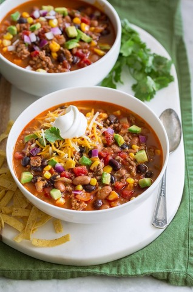

Taco Soup

A delicious winter meal!
Next time a taco craving hits, no need to grab the tortillas! This taco soup recipe is one of the quickest, easiest Tex-Mex inspired meals. It's loaded with favorite ingredients like ground beef, black and pinto beans, and corn, and convenient flavor boosters like fire-roasted tomatoes and taco seasoning. In other words, it's a soup recipe that's sure to satisfy the whole family. Toppings are completely customizable so there will be something for everyone—a weeknight family dinner winner!
Indegredients
- 1 1/2 lb. ground beef
- 1 yellow onion, chopped
- 3 cloves garlic, minced
- 1 jalapeño, chopped
- 2 14.5-oz. cans fire roasted tomatoes
- 1 1-oz. packet taco seasoning
- 1 4-oz. can green chiles
- 1 qt. chicken broth
- 1 15-oz. can pinto beans, drained and rinsed
- 1 15-oz. can black beans, drained and rinsed
- 1 15-oz. can of corn, drained
- Kosher salt, to taste
- Sour cream, for serving
- Cilantro, for serving
Steps
- Heat a large Dutch oven over medium heat. Add the beef and onion and cook, stirring to break the beef into small pieces, until it is no longer pink and the onion is softened, 6 to 8 minutes.
- Stir in the garlic and jalapeño, if using, and cook, stirring, for two minutes.
- Stir in the tomatoes, taco seasoning, green chiles, chicken broth, corn, pinto beans, and black beans. Bring to a boil over medium-high heat. Reduce the heat to medium-low, partially cover and cook, stirring occasionally, until the flavors meld, about 20 minutes. Season with salt to taste.
- Serve, topped with sour cream, chopped cilantro leaves, cheddar cheese, and avocado, if you like.